Plotting MCMC draws using the bayesplot package
Jonah Gabry
2025-12-12
Source:vignettes/plotting-mcmc-draws.Rmd
plotting-mcmc-draws.RmdIntroduction
This vignette focuses on plotting parameter estimates from MCMC draws. MCMC diagnostic plots are covered in the separate vignette Visual MCMC diagnostics, and graphical posterior predictive model checking is covered in the vignette Graphical posterior predictive checks.
Setup
In addition to bayesplot we’ll load the following packages:
- ggplot2, in case we want to customize the ggplot objects created by bayesplot
- rstanarm, for fitting the example models used throughout the vignette
Example model
The bayesplot package provides various plotting functions for visualizing Markov chain Monte Carlo (MCMC) draws from the posterior distribution of the parameters of a Bayesian model. In this vignette we demonstrate a few of these functions. Example usage of the functions not demonstrated here can be found in the package documentation.
For demonstration we will use draws obtained using the
stan_glm function in the rstanarm package
(Gabry and Goodrich, 2017), but MCMC draws from using any package can be
used with the functions in the bayesplot package. See,
for example, brms, which, like
rstanarm, calls the rstan package
internally to use Stan’s MCMC
sampler.
head(mtcars) # see help("mtcars") mpg cyl disp hp drat wt qsec vs am gear carb
Mazda RX4 21.0 6 160 110 3.90 2.620 16.46 0 1 4 4
Mazda RX4 Wag 21.0 6 160 110 3.90 2.875 17.02 0 1 4 4
Datsun 710 22.8 4 108 93 3.85 2.320 18.61 1 1 4 1
Hornet 4 Drive 21.4 6 258 110 3.08 3.215 19.44 1 0 3 1
Hornet Sportabout 18.7 8 360 175 3.15 3.440 17.02 0 0 3 2
Valiant 18.1 6 225 105 2.76 3.460 20.22 1 0 3 1
# linear regression model using stan_glm
# using '~ .' to include all variables
fit <- stan_glm(mpg ~ ., data = mtcars, seed = 1111)
print(fit)stan_glm
family: gaussian [identity]
formula: mpg ~ .
observations: 32
predictors: 11
------
Median MAD_SD
(Intercept) 12.0 19.3
cyl -0.1 1.1
disp 0.0 0.0
hp 0.0 0.0
drat 0.8 1.6
wt -3.7 1.9
qsec 0.8 0.8
vs 0.3 2.1
am 2.6 2.1
gear 0.6 1.5
carb -0.2 0.9
Auxiliary parameter(s):
Median MAD_SD
sigma 2.7 0.4
------
* For help interpreting the printed output see ?print.stanreg
* For info on the priors used see ?prior_summary.stanregTo use the posterior draws with the functions in the bayesplot package we’ll extract them from the fitted model object:
[1] 1000 4 12
dimnames(posterior)$iterations
NULL
$chains
[1] "chain:1" "chain:2" "chain:3" "chain:4"
$parameters
[1] "(Intercept)" "cyl" "disp" "hp" "drat"
[6] "wt" "qsec" "vs" "am" "gear"
[11] "carb" "sigma" We’ve used as.array above (as opposed to
as.matrix) because it keeps the Markov chains separate
(stan_glm runs four chains by default). Most of the plots
don’t actually need the chains to be separate, but for a few of the
plots we make in this vignette we’ll want to show the chains
individually.
Posterior uncertainty intervals
For models fit using MCMC we can compute posterior uncertainty intervals (sometimes called “credible intervals”) in various ways. bayesplot currently provides plots of central intervals based on quantiles, although additional options may be provided in future releases (e.g., HDIs, which can be useful in particular cases).
Documentation:
mcmc_intervals, mcmc_areas
Central posterior uncertainty intervals can be plotted using the
mcmc_intervals function.
color_scheme_set("red")
mcmc_intervals(posterior, pars = c("cyl", "drat", "am", "sigma"))The default is to show 50% intervals (the thick segments) and 90%
intervals (the thinner outer lines). These defaults can be changed using
the prob and prob_outer arguments,
respectively. The points in the above plot are posterior medians. The
point_est argument can be used to select posterior means
instead or to omit the point estimates.
To show the uncertainty intervals as shaded areas under the estimated
posterior density curves we can use the mcmc_areas
function.
mcmc_areas(
posterior,
pars = c("cyl", "drat", "am", "sigma"),
prob = 0.8, # 80% intervals
prob_outer = 0.99, # 99%
point_est = "mean"
)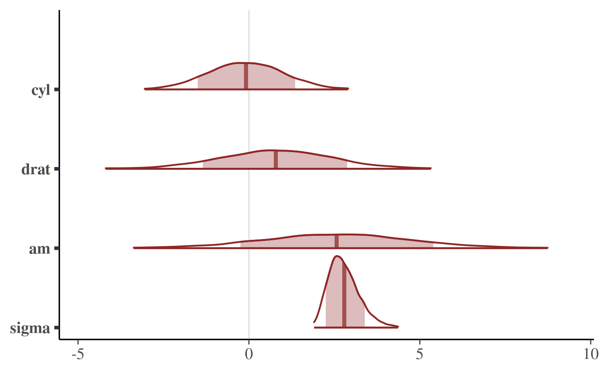
Univariate marginal posterior distributions
bayesplot provides functions for looking at histograms or kernel density estimates of marginal posterior distributions, either with all Markov chains combined or with the chains separate.
Documentation:
mcmc_hist
The mcmc_hist function plots marginal posterior
distributions (combining all chains):
color_scheme_set("green")
mcmc_hist(posterior, pars = c("wt", "sigma"))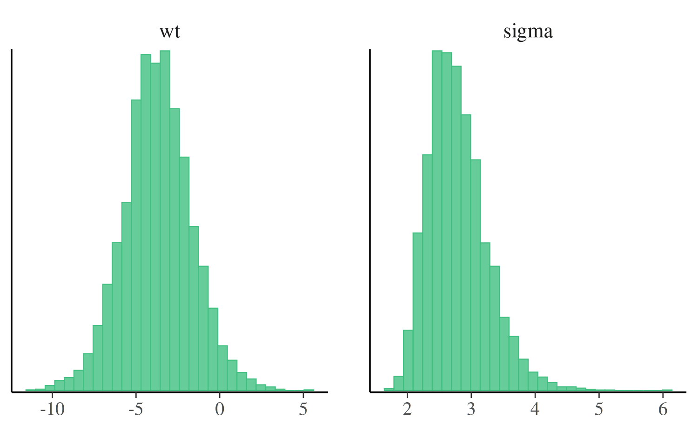
If we want to plot log(sigma) rather than
sigma we can either transform the draws in advance or use
the transformations argument.
color_scheme_set("blue")
mcmc_hist(posterior, pars = c("wt", "sigma"),
transformations = list("sigma" = "log"))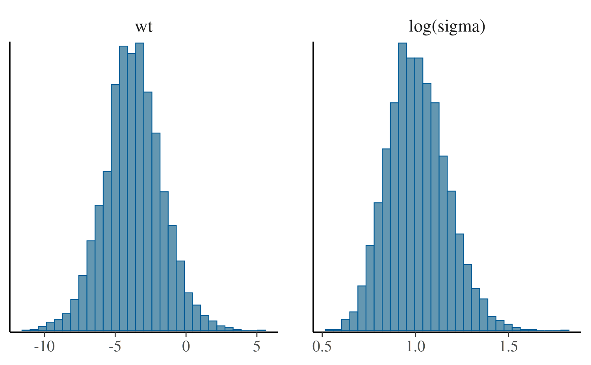
Most of the other functions for plotting MCMC draws also have a
transformations argument.
mcmc_hist_by_chain
To view separate histograms of each of the four Markov chains we can
use mcmc_hist_by_chain, which plots each chain in a
separate facet in the plot.
color_scheme_set("brightblue")
mcmc_hist_by_chain(posterior, pars = c("wt", "sigma"))
mcmc_dens
The mcmc_dens function is similar to
mcmc_hist but plots kernel density estimates instead of
histograms.
color_scheme_set("purple")
mcmc_dens(posterior, pars = c("wt", "sigma"))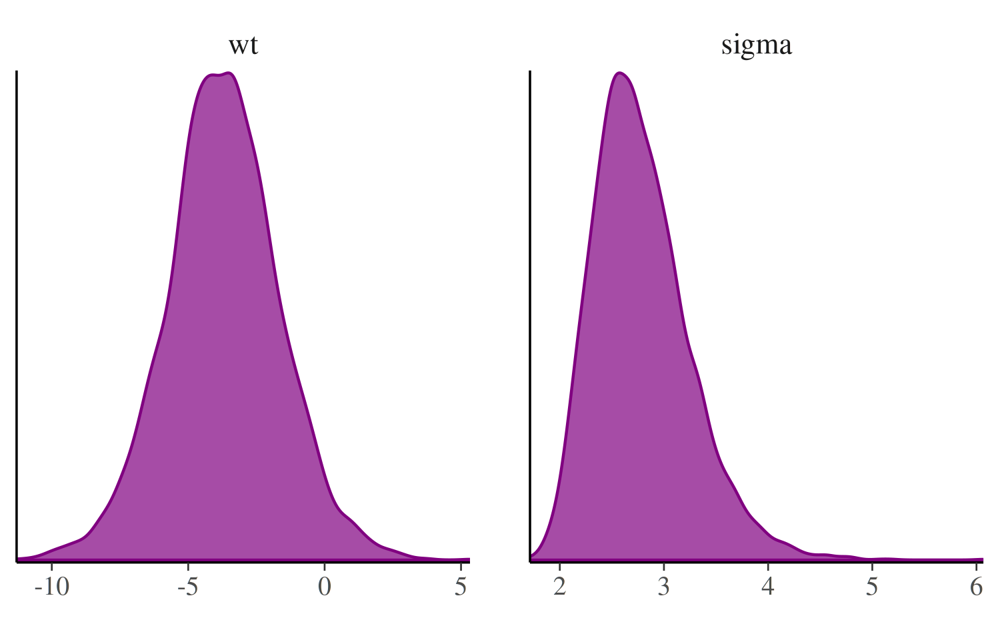
mcmc_dens_overlay
Like mcmc_hist_by_chain, the
mcmc_dens_overlay function separates the Markov chains. But
instead of plotting each chain individually, the density estimates are
overlaid.
mcmc_dens_overlay(posterior, pars = c("wt", "sigma"))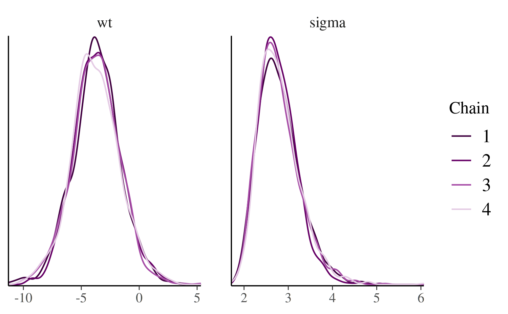
mcmc_violin
The mcmc_violin function plots the density estimates of
each chain as violins and draws horizontal line segments at
user-specified quantiles.
color_scheme_set("teal")
mcmc_violin(posterior, pars = c("wt", "sigma"), probs = c(0.1, 0.5, 0.9))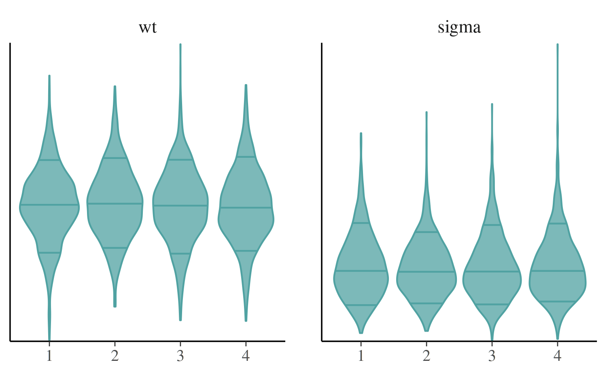
Bivariate plots
Various functions are available for plotting bivariate marginal posterior distributions. Some of these functions also take optional arguments for adding MCMC diagnostic information to the plots. That additional functionality is discussed in the separate Visual MCMC diagnostics vignette.
Documentation:
mcmc_scatter
The mcmc_scatter function creates a simple scatterplot
of two parameters.
color_scheme_set("gray")
mcmc_scatter(posterior, pars = c("(Intercept)", "wt"),
size = 1.5, alpha = 0.5)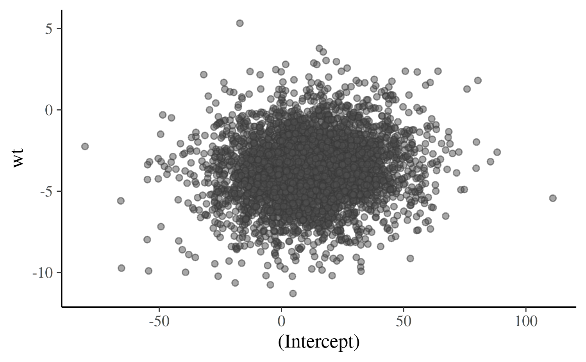
mcmc_hex
The mcmc_hex function creates a similar plot but using
hexagonal binning, which can be useful to avoid overplotting.
# requires hexbin package
if (requireNamespace("hexbin", quietly = TRUE)) {
mcmc_hex(posterior, pars = c("(Intercept)", "wt"))
}mcmc_pairs
In addition to mcmc_scatter and mcmc_hex,
bayesplot now provides an mcmc_pairs
function for creating pairs plots with more than two parameters.
color_scheme_set("pink")
mcmc_pairs(posterior, pars = c("(Intercept)", "wt", "sigma"),
off_diag_args = list(size = 1.5))The univariate marginal posteriors are shown along the diagonal as
histograms, but this can be changed to densities by setting
diag_fun="dens". Bivariate plots are displayed above and
below the diagonal as scatterplots, but it is also possible to use hex
plots by setting off_diag_fun="hex". By default,
mcmc_pairs shows some of the Markov chains (half, if an
even number of chains) above the diagonal and the others below. There
are many more options for controlling how the draws should be split
between the plots above and below the diagonal (see the documentation
for the condition argument), but they are more useful when
MCMC diagnostic information is included. This is discussed in the Visual
MCMC diagnostics vignette.
Trace plots
Trace plots are time series plots of Markov chains. In this vignette we show the standard trace plots that bayesplot can make. For models fit using any Stan interface (or Hamiltonian Monte Carlo in general), the Visual MCMC diagnostics vignette provides an example of also adding information about divergences to trace plots.
Documentation:
mcmc_trace
The mcmc_trace function creates standard trace
plots:
color_scheme_set("blue")
mcmc_trace(posterior, pars = c("wt", "sigma"))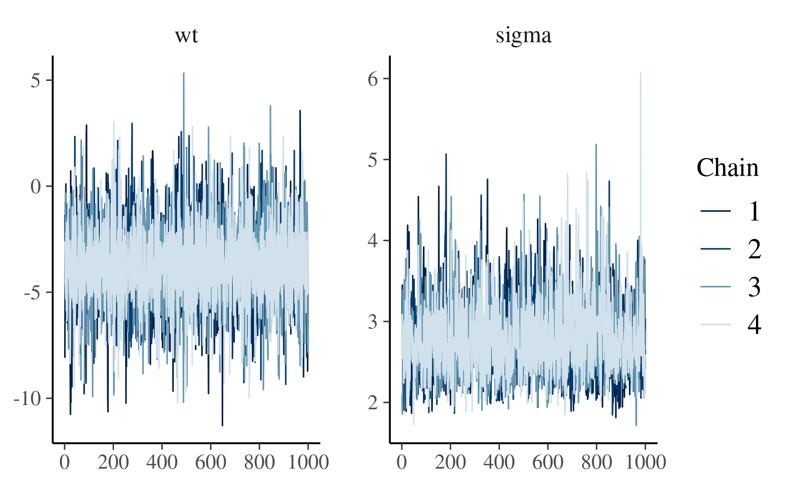
If it’s hard to see the difference between the chains we can change to a mixed color scheme, for example:
color_scheme_set("mix-blue-red")
mcmc_trace(posterior, pars = c("wt", "sigma"),
facet_args = list(ncol = 1, strip.position = "left"))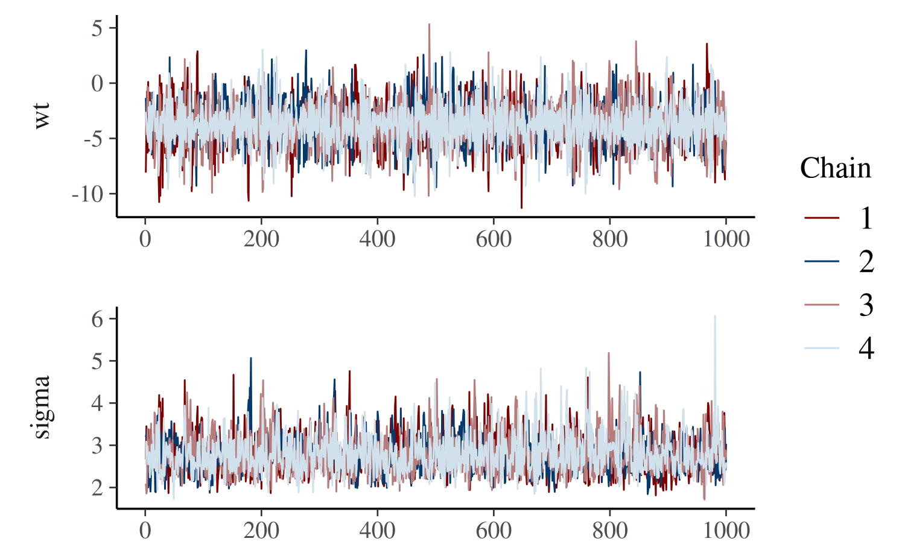
The code above also illustrates the use of the
facet_args argument, which is a list of parameters passed
to facet_wrap in ggplot2. Specifying
ncol=1 means the trace plots will be stacked in a single
column rather than placed side by side, and
strip.position="left" moves the facet labels to the y-axis
(instead of above each facet).
The "viridis"
color scheme is also useful for trace plots because it is comprised
of very distinct colors:
color_scheme_set("viridis")
mcmc_trace(posterior, pars = "(Intercept)")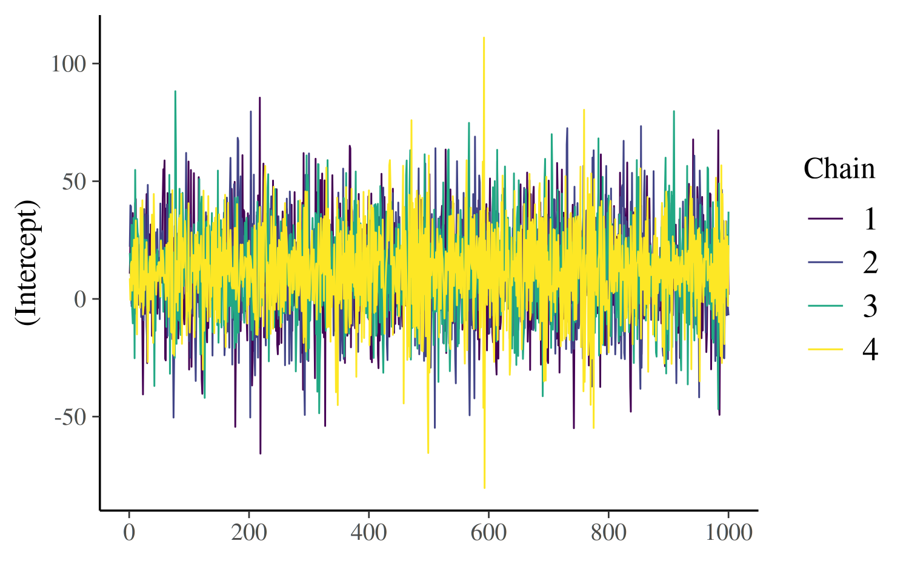
mcmc_trace_highlight
The mcmc_trace_highlight function uses points instead of
lines and reduces the opacity of all but a single chain (which is
specified using the highlight argument).
mcmc_trace_highlight(posterior, pars = "sigma", highlight = 3)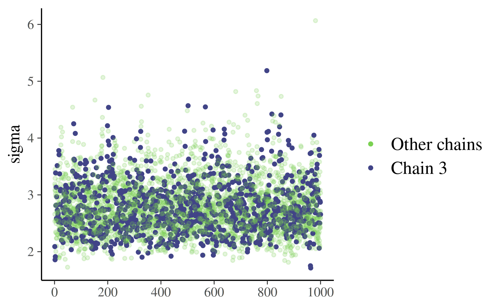
References
Gabry, J., and Goodrich, B. (2017). rstanarm: Bayesian Applied Regression Modeling via Stan. R package version 2.15.3. https://mc-stan.org/rstanarm/, https://CRAN.R-project.org/package=rstanarm
Gabry, J., Simpson, D., Vehtari, A., Betancourt, M. and Gelman, A. (2019), Visualization in Bayesian workflow. J. R. Stat. Soc. A, 182: 389-402. :10.1111/rssa.12378. (journal version, arXiv preprint, code on GitHub)
Gelman, A., Carlin, J. B., Stern, H. S., Dunson, D. B., Vehtari, A., and Rubin, D. B. (2013). Bayesian Data Analysis. Chapman & Hall/CRC Press, London, third edition.
Stan Development Team. (2017). Stan Modeling Language Users Guide and Reference Manual. https://mc-stan.org/users/documentation/